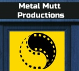
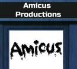
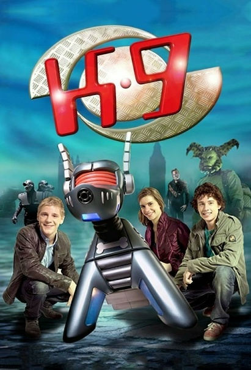

Таблица коллекции |  Навигация по канону |  Связные экранизации |
Таблица коллекции | Навигация по канону | Связные экранизации |






Сюжет: конец XXI века, Лондон. В лаборатории учёного Алистера Гриффина во время проведения эксперимента с пространственно-временным манипулятором происходит сбой, приводящий к ужасным последствиям. Трое подростков — бездомный бунтарь Старки, упрямая милашка Джорджи и ловкий проныра Дериус — должны помочь учёному защитить мир от тоталитаризма властей и вторжения агрессивных пришельцев из других времён и чужих миров.
 | Список серий: 1 серия — Регенерация 2 серия — Освобождение 3 серия — Корвен 4 серия — Охотник за головами 5 серия — Сирены Церера 6 серия — Сам страх 7 серия — Падение дома Гриффина 8 серия — Челюсти Ортруса 9 серия — Пожиратели снов 10 серия — Проклятие Анубиса 11 серия — Ороборос 12 серия — Инопланетный аватар 13 серия — Эолиец 14 серия — Последний дуб 15 серия — Чёрный голод 16 серия — Шпион из Кембриджа 17 серия — Потерянная библиотека УККО 18 серия — Коп-мутант 19 серия — Хранители 20 серия — Таффони и временная петля 21 серия — Роботы-гладиаторы 22 серия — Чокнутый 23 серия — Ангел севера 24 серия — Последняя граница 25 серия — Пес Корвена 26 серия — Затмение Корвена |
|---|